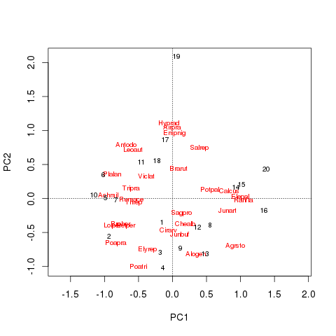
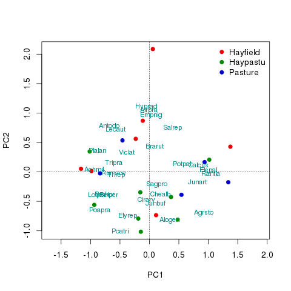

Customising vegan’s ordination plots
Posted in
Tagged
Blogroll
As a developer on the vegan package for R, one of the most FAQs is how to customise ordination diagrams, usually to colour the sample points according to an external grouping variable. Now, just because we get asked how to do this a lot is not really a reflection on the quality of the plot() methods available in vegan.
Ordination diagrams are difficult beasts to handle with plotting code without having an unwieldy number of arguments etc. There are potentially five sets of scores that need to be plotted so the number of arguments could quickly get out of hand if we allowed the user to pass all the relevant graphical parameters to the various sets of scores. We’ve provided a basic plot() method that is set up with useful defaults that works for all the ordination methods in vegan. This method is really there to allow the quick visualisation of the fitted ordination; I use vegan on almost a daily basis and none of my presentation or publication figures use the default plot method at all. However, we have provided all the tools needed to draw custom ordination plots within vegan. How you use them also provides a useful guide to building up base graphics plots from lower-level plotting functions. In this post I intend to show two examples of building up a simple PCA biplot from the basic building blocks available in vegan and R’s base graphics.
To get going, start R and load the vegan package. For this example I will use the classic Dutch Dune Meadow data set which I also load. A simple PCA of the species data is then fitted and stored in mod. To finish the basic example, I use the basic plot() method to plot the PCA biplot. Note that I’m using symmetric scaling here; I tend to prefer this scaling for general diagrams as it preserves many of the features of biplots without focusing on one or other sets of scores. (Here I’m also using it to illustrate how to select a scaling when you are building the plot from scratch.)
## load vegan
require("vegan")
## load the Dune data
data(dune, dune.env)
## PCA of the Dune data
mod <- rda(dune, scale = TRUE)
## plot the PCA
plot(mod, scaling = 3)The resulting PCA biplot is shown below

Building a biplot using vegan methods
The first example of a customised biplot I will show uses low-level plotting methods provided by vegan. These include points() and text() methods for objects of class "cca". (The "cca" object is one of the base ordination classes in vegan; its name is a bit unfortunate as it is the base representation for PCA, CA, RDA etc… objects — read more about this object via ?cca.object.) I am going to plot the basic PCA biplot, but colour the sites according to the land-use variable dune.env$Use, which has three levels
> with(dune.env, levels(Use))
[1] "Hayfield" "Haypastu" "Pasture"
Start by defining an object holding the desired ordination scaling and a vector of colours with which to do the plotting
scl <- 3 ## scaling = 3
colvec <- c("red2", "green4", "mediumblue")The basic plot() method can be coerced into setting up the basic plot axes, limits etc for us by using type = "n", so we use that short cut and pass along our desired scaling
plot(mod, type = "n", scaling = scl)The next step is to add the site scores. Here I use the points() method rather than draw the site scores using their sample ID (as is the default in the plot() method).
with(dune.env, points(mod, display = "sites", col = colvec[Use],
scaling = scl, pch = 21, bg = colvec[Use]))The key point to note in the code chunk above is how I colour each site according to its land-use. I index into the vector of colours created earlier using the factor Use. Use is essentially a vector of 1s, 2s, and 3s (there are three levels remember). The colvec[Use] evaluates to a vector the same length as the number of sites, where each element is one of the pre-specified colours
> head(with(dune.env, colvec[Use]))
[1] "green4" "green4" "green4" "mediumblue"
[5] "green4" "green4"
The display argument selects the type of scores to plot. The remainder of the arguments are the scaling for the scores (so they match the base plot) and arguments to style the plotted points. Next I add the species scores, but this time I want to label them with (abbreviated) species names. For this I use the text() method with argument display = "species"
text(mod, display = "species", scaling = scl, cex = 0.8, col = "darkcyan")To finish the plot I add a legend. It is important to get the ordering and labelling of the colours correct here. When I drew the site scores I used the Use factor to index the vector of plotting colours. To ensure we get the correct ordering in the legend, it is best to extract the levels as the lables, which is what I do below
with(dune.env, legend("topright", legend = levels(Use), bty = "n",
col = colvec, pch = 21, pt.bg = colvec))If you want to provide custom labels, look at the levels of the factor and provide them to legend() in the correct order. The biplot should now look like the one below

Building a biplot using base graphics directly
If you want the ultimate level of control over the plots then you will want to build the plot up from scratch using lower-level plotting functions provided by base graphics. In this second example I’ll recreate the plot I made above but from the ground up using basic plotting functions. First, start by extracting the scores needed from the ordination object. Here the scaling required for the plot needs to be provided and the sets of scores specified
str(scrs, max = 1)This results in a list with two components;sites and species
scrs <- scores(mod, display = c("sites", "species"), scaling = scl)Each component is a matrix with two columns containing the scores on the first and second principal components respectively. If you want to extract scores on different axes provide the choices argument to the scores() function with a numeric vector of the axes you wish to extract. Do note that the code below assumes only two axes are extracted. Next compute the axis limits, which need to cover the range of the site and species scores on the first (x-axis) and second (y-axis) principal components
xlim <- with(scrs, range(species[,1], sites[,1]))
ylim <- with(scrs, range(species[,2], sites[,2]))Now everything is ready to do some actual plotting. Start preparing the plot device be starting a new plot with plot.new() and then set up the coordination system via a call to plot.window() supplying the axis limits created above. A crucial aspect of the call to plot.window() is the graphical parameter asp which controls the aspect ratio of the plot. Here we set the aspect ratio equal to 1 to preserve the relationships between scores on the different axes and the distance interpretation of the biplot
plot.new()
plot.window(xlim = xlim, ylim = ylim, asp = 1)The reference guides (dotted lines going through the point (0,0) are added first so as to not lie on top of any of the site or species scores. Two calls to the abline() function are used
abline(h = 0, lty = "dotted")
abline(v = 0, lty = "dotted")The next two lines of code use the default methods for points() and text() rather than the "cca" methods used above
with(dune.env, points(scrs$sites, col = colvec[Use],
pch = 21, bg = colvec[Use]))
with(scrs, text(species, labels = rownames(species),
col = "darkcyan", cex = 0.8))The legend is added in same way as before
with(dune.env, legend("topright", legend = levels(Use), bty = "n",
col = colvec, pch = 21, pt.bg = colvec))All that remains is to add the plot furniture; the axes, axis labels and the plot frame
axis(side = 1)
axis(side = 2)
title(xlab = "PC 1", ylab = "PC 2")
box()The fruits of our labours are shown below
I don’t claim these are perfect; many of the labels lie on top of one another for example. Vegan has some functions to help with this but I’ll leave exemplifying those for another post. The full code for the two examples is shown below
## load vegan
require("vegan")
## load the Dune data
data(dune, dune.env)
## PCA of the Dune data
mod <- rda(dune, scale = TRUE)
## plot the PCA
plot(mod, scaling = 3)
## build the plot up via vegan methods
scl <- 3 ## scaling == 3
colvec <- c("red2", "green4", "mediumblue")
plot(mod, type = "n", scaling = scl)
with(dune.env, points(mod, display = "sites", col = colvec[Use],
scaling = scl, pch = 21, bg = colvec[Use]))
text(mod, display = "species", scaling = scl, cex = 0.8, col = "darkcyan")
with(dune.env, legend("topright", legend = levels(Use), bty = "n",
col = colvec, pch = 21, pt.bg = colvec))
## or via base graphics methods
scrs <- scores(mod, display = c("sites", "species"), scaling = scl)
str(scrs, max = 1)
xlim <- with(scrs, range(species[,1], sites[,1]))
ylim <- with(scrs, range(species[,2], sites[,2]))
plot.new()
plot.window(xlim = xlim, ylim = ylim, asp = 1)
abline(h = 0, lty = "dotted")
abline(v = 0, lty = "dotted")
with(dune.env, points(scrs$sites, col = colvec[Use],
pch = 21, bg = colvec[Use]))
with(scrs, text(species, labels = rownames(species),
col = "darkcyan", cex = 0.8))
axis(1)
axis(2)
title(xlab = "PC 1", ylab = "PC 2")
with(dune.env, legend("topright", legend = levels(Use), bty = "n",
col = colvec, pch = 21, pt.bg = colvec))
box()
Social